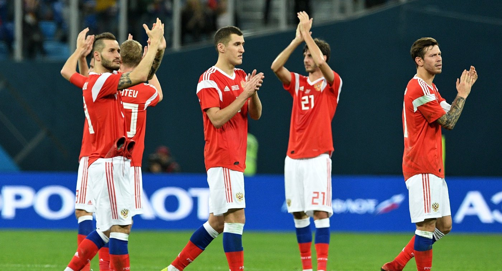
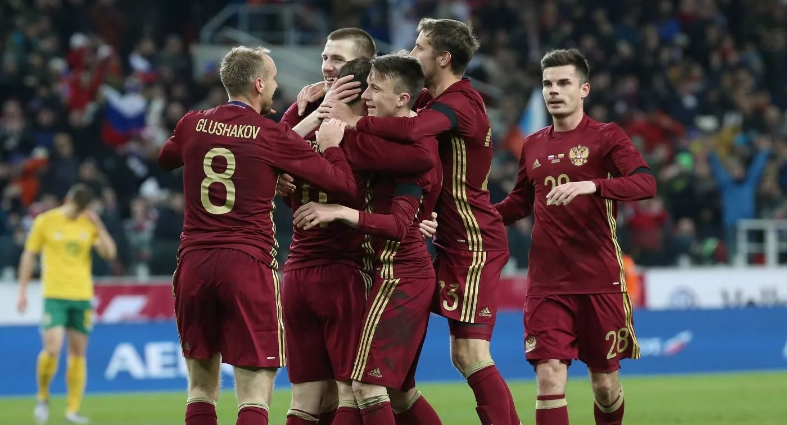
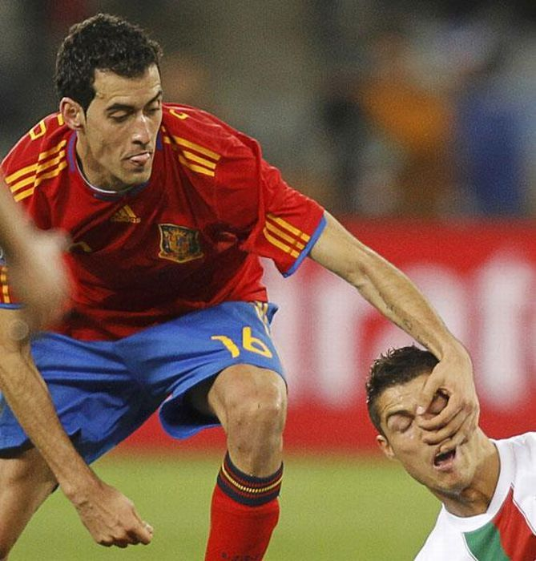
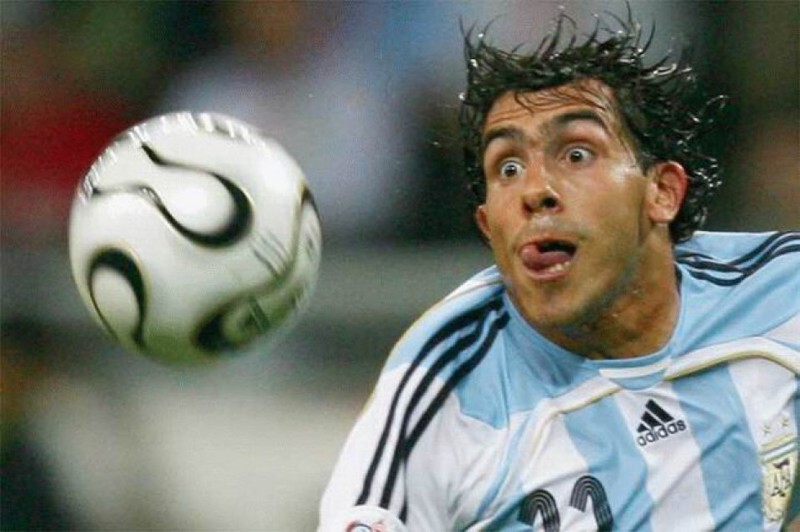

О футболе
спойлера нету
Футбо́л (англ. football от foot «ступня» + ball «мяч») — командный вид спорта, в котором целью является забить мяч в ворота соперника ногами или другими частями тела (кроме рук) большее количество раз, чем команда соперника. В настоящее время самый популярный и массовый вид спорта в мире. В игры с мячом играли во многих странах. В Китае такая разновидность называлась Чжу-Кэ. В древней Спарте игра называлась «Эпискирос», а в Древнем Риме «Харпастум». Где-то в Новое время в Брянских землях проводились игры, инвентарём которых был кожаный мяч размером с человеческую голову, набитый перьями. Эти состязания наименовались как «шалыга» и «кила». Примерно в XIV веке итальянцы изобрели игру «Кальчо». Именно они завезли эту игру на Британские острова. В XIX веке футбол в Англии приобрёл популярность, сравнимую с крикетом. В него играли в основном в колледжах. Но в некоторых колледжах правила разрешали ведение и передачу мяча руками, а в других напротив, запрещалось. Первая попытка создать единые правила была предпринята в 1846 году, когда встретились представители нескольких колледжей. Они установили первый свод правил. В 1857 году был основан первый специализированный футбольный клуб — «Шеффилд». В 1863 году после долгих переговоров был принят свод правил Футбольной Ассоциации Англии. Также были приняты размеры поля и ворот. А в 1871 году был основан Кубок Англии — старейший футбольный турнир в мире. В 1891 году было принято правило о пенальти. Но сначала пенальти билось не с точки, а с линии, которая также как и сейчас находилась на расстоянии 11 метров от ворот. В 1880-х годах футбол стал популярен в обществе. Число клубов в Футбольной ассоциации превышало 100. Тогда же стали ходить слухи о том, что некоторые клубы платят игрокам зарплату, а по первоначальному замыслу ассоциации футбол — исключительно любительский вид спорта. Есть 17 официальных правил игры, каждое из которых содержит список оговорок и руководящих принципов. Эти правила предназначены для применения на всех уровнях футбола, хотя есть некоторые изменения для таких групп, как юниоры, взрослые, женщины и люди с ограниченными физическими возможностями. Законы очень часто формулировались в общих чертах, которые позволяют упростить их применения в зависимости от характера игры. Правила игры публикуются в ФИФА, но поддерживаются Международным советом футбольных ассоциаций (IFAB). Каждая команда состоит максимум из одиннадцати игроков (без учета запасных), один из которых должен быть вратарём. Правила неофициальных соревнований могут уменьшить количество игроков, максимум до 7. Вратари являются единственными игроками, которым позволено играть руками при условии: они делают это в пределах штрафной площади у своих собственных ворот. Хотя есть различные позиции на поле, эти позиции не обязательны. Цель игры — забить мяч в ворота противника, сделать это как можно большее количество раз и постараться не допустить гола в свои ворота. Матч выигрывает команда, забившая большее количество голов. В случае, если в течение двух таймов команды забили одинаковое количество голов, то или фиксируется ничья, или победитель выявляется согласно установленному регламенту матча. В этом случае может быть назначено дополнительное время — ещё два тайма по 15 минут каждый. Как правило, между основным и дополнительным временем матча командам предоставляется перерыв. Между дополнительными таймами командам даётся лишь время на смену сторон. Одно время в футболе существовало правило, по которому победителем объявлялась команда, первой забившая гол или выигрывавшая по окончании любого из дополнительных таймов. В настоящий момент дополнительное время либо не играется вовсе, либо играется в полном объёме (2 тайма по 15 минут). Если в течение дополнительного времени победителя выявить не удаётся, проводится серия послематчевых пенальти, не являющихся частью матча: по воротам противника с расстояния 11 метров пробивается по пять ударов разными игроками. Если количество забитых пенальти у обеих команд будет равным, тогда пробиваются по одной паре пенальти, пока не будет выявлен победитель. Футбольный мяч должен быть сферической формы, используемый для игры в футбол, параметры которого регламентируются Правилом 2 Правил игры в футбол. Мяч состоит из 3 частей: покрышки, подкладки и камеры. Покрышка — верхняя оболочка мяча, по которой наносятся удары. Подкладка — средняя оболочка мяча, от толщины которой зависит прочность мяча (чем толще, чем прочнее) Камера — центральная оболочка мяча, в которую закачивается воздух для более удобного нанесения ударов. ФИФА и Международный олимпийский комитет используют «футбол» как официальное международное название игры.
   